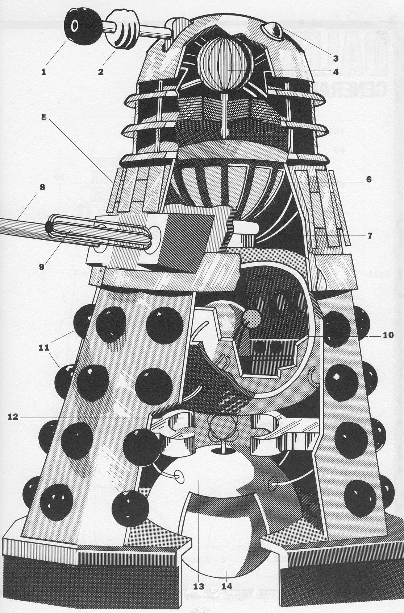
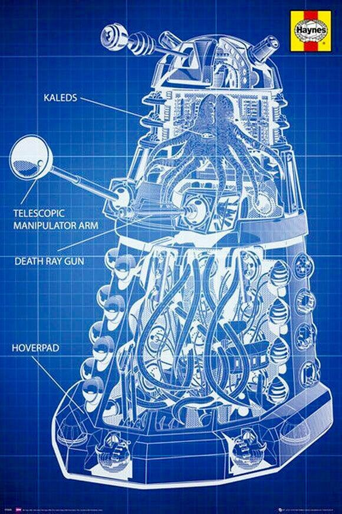
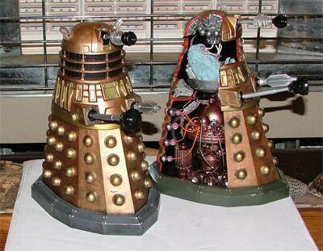

Exterior
A casca dos Daleks, originalmente chamada de "máquina de viagem Mark III", (TV: Genesis of the Daleks) podia ser dividida em três partes.
Topo: Os meios de visão e comunicação do Dalek, uma cúpula com um par de alto-falantes com "luzes" (chamados de descarregadores de luminosidade) na parte superior dos lados, (PROSA: Prisoner of the Daleks) e uma haste de olho no meio. Esta parte estava conectada com o meio através de um "pescoço".
Meio: Na parte do meio de um Dalek estão localizados a haste de arma e o braço manipulador. Os mesmos proviam os meios de operação e ataque de um Dalek. Em modelos posteriores, o meio era capaz de girar.
Base: Os meios de movimentação de um Dalek consistiam de uma base robusta com uma estrutura parecida com uma saia de placas cravejadas com globos. Isto permitia o movimento e, em modelos posteriores, vôo.